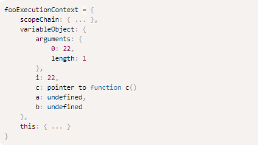
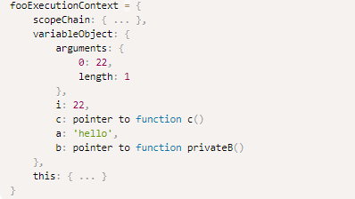
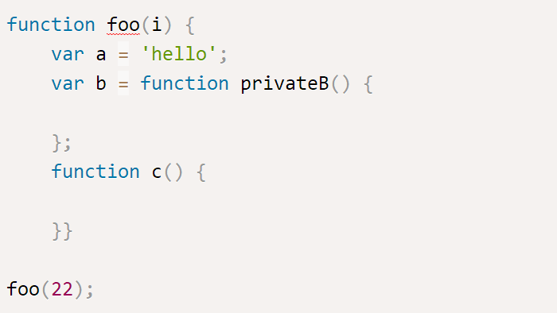
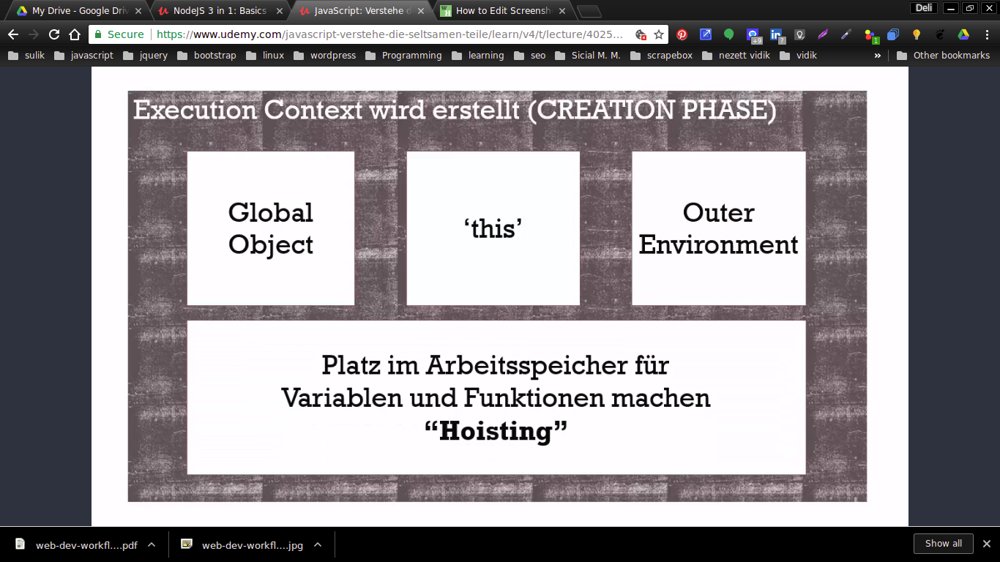

CODE EXECUTION IN JAVASCIPT
SYNTAX PARSER
Programm deinen cod unsersucht, hearausfindet was er mach und check ob es valide ist
Check if code is valid then =>
then it compiles or interprets the code for the computer
EXECUTION CONTEXT / EXECUTION CONTEXT OBJECT

EXECUTION CONTEXT OBJECT === new FunctionConstructorObject
The ExecutionContextObject provides an environment which makes it possible that the code-body can run
INCLUDES
in the ExecutionContextObject/FunctionConstructorObject


Types of Execution Context
- Global Execution Context GEC
- Function Execution Context FEC
- Eval Execution Contex
executinContextObjects CREATION
LEXICAL ENVIRONMENT
Lexical environment === Scope-Chain
Scope-Chain === chain of Variable Objects of the lexical parent
So the lexical environment defines, a function to which free variables and functions - in the full surrounding code - has access
SCOPE CHAIN
scope chain is a list of all the parent variable objects, plus (in the front of scope chain) the function’s own variable/activation object.
this is contains the whole LEXICAL ENVIRONMENT / OUTER ENVIRONMNET
ALL FUNCTIONS SAVE SCOPE CHAIN IN THE [[SCOPE]] PROPERTY AT CREATION MOMENT.
SCOPE TYPES
- function Scope
- Global Scope
- Block Scope / LET
Block scope is create by defining a variable with "let" in a block
Let variables are not hoisted, can be used just after the the execution has reached that variable
Lexical environment Consists Of:
- Environment record:
records the identifier bindings that are created within the scope of its associated Lexical Environment.
- Outer Environment
[[Scopes]] - PROPERTY / SCOPE-CHAIN / CLOSURE
or =>
In JavaScript, a closure is a function to which the variables of the surrounding context are bound by reference./A closure is a pair consisting of the function code and the environment in which the function is created.
When a given execution context encounters a function definition in the code, a new function object is created with an internal property named [[scope]] (as in lexical scope) which references the current VariableEnvironment. (ES 5 13.0-2).
(functions nested in the hoisted function are referenced in the variable object of the hoisted function and dont get any variable object and [[Scopes]] property, they have a reference pointer from the variable object to their code in the memory)
Every function gets a [[scope]] property - on creation -, and when the function is invoked the value of the scope property is assigned to the outer lexical environment reference (or outerLex) property of its VariableEnvironment - variable object of lexical parent function -.
(ES 5 10.4.3.5-7) In this way, each VariableEnvironment inherits from the VariableEnvironment of its lexical parent. This scope chaining runs the length of the lexical hierarchy starting from the global object.
IMPORTANT:regardless — whether a function will be activated later or not — the parent scope is already captured in it at creation time
OBJECT OF BINDINGS === FRAME
LIST OF FRAMES === ENVIRONMENT
CHAINED ENVIRONMENT FRAMES === SCOPE-CHAIN
STATIC / DYNAMIC SCOPE
VARIABLE / ACTIVATION OBJECT
In the Creation Stage the interpreter creates the executionContextObj by scanning the function for parameters or arguments passed in, local function declarations and local variable declarations. The result of this scan becomes the variableObject in the executionContextObj.
difference between AKTIVATION and VARIABLE OBJECT
function’s variable object is the same simple variable object, but besides variables and function declarations, it also stores formal parameters and arguments object and called the activation object.
Includos of ACTIVATION OBJECT
- Arguments Object
- Function name and pointer to memory when function is stored as value
- Variables as undefined in creation and with their values when activated
Function expression are not hoisted in the activation object
THIS
- If on the left hand side from the call parentheses ( ... ) - of the function-, there is a value of Reference type then this value is set to the base object of this value of Reference type.
- In all other cases (i.e. with any other value type which is distinct from the Reference type), this value is always set to null. But since there is no any sense in null for this value, it is implicitly converted to global object.
THIS Is Always the object on the base key of the reference type value on the left side from the Call paranthases
IF FUNCTIONS CALLS AN OTHER FUNCTION: Inner functions and formal parameters are stored in the activation object and The activation object always returns as this value — null and this value is set to null and, as consequence, to global.
CREATION PHASE Of Execution Context

STEPPS
- Definition Of Global Obejct
in case of creation of global execution context Global Object will be created
- Definition of This
- pointing on Outer Environment
- HOISTING
HOISTING


Variable and Function setunp and reserving memorispace for them
Moves all declarations to the top of the current scope
Variables: Just the declaration/definition will be hosted so itt will be set on undefined, initialization not
Functions Declarations definition are hoisted
Function Expressions are not
This is useful because it allows you to express your high-level logic at the beginning of your source code rather than the end, communicating your intentions more clearly.
EXECUTION PHASE In Execution Context
Assign values, references to functions and interpret / execute code.
It has:
Global Object
this
executes you CODE
EXECUTION STACK
Execution stack on Udemy
The one Global Execution context and any number of (function) execution contexts contexts, queued with other events in order
The Order is: SEQUENCE FLOW
Execution context stack is a stack data structure to store and track all the execution stacks created while executing the JS code
SINGLE THREADED SYNCRONOUS EXECUTION
Single threaded: One command at once and in order
But the Browser can optimize and allow to execute more threads at once
ASYNC JAVASCRIPT
Javascript is SINGLE THREADED but can look ASYNC because beside Javascipt there are more engines are running side by side in the browser
Async Running Engines in the brower
- Javascript - Javascript Execution Stack
- Eventque
- Rendering Engine
MESSAGE QUEUE AND EVENT LOOP
MESSAGEQUE / EVENTQUE

JavaScript runtimes contain a MESSAGE QUEUE which stores a list of messages from EXTERNAL EVENTS to be processed and their associated callback functions.
These messages are queued in response to external events (such as a mouse being clicked or receiving the response to an HTTP request) given a callback function has been provided.
If, for example a user were to click a button and no callback function was provided – no message would have been enqueued.
EVENT LOOP
EVENT LOOP constantly checks whether the call stack is empty, and whenever it’s empty, it checks if the event queue has any functions waiting to be invoked. If it does, then the first function in the queue gets invoked and moved over into the call stack
EVENT-TABLE
palce where the events are stageing
CONTEXT VS SCOPE